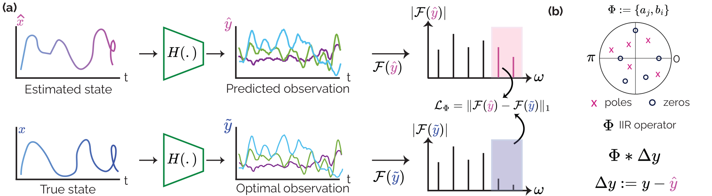
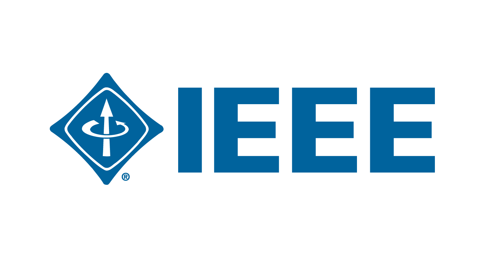

About Me
I am a Master's student in Computer Engineering at Middle East Technical University (METU), working under the supervision of Prof. Dr. Sinan Kalkan and Assist. Prof. Dr. Emre Akbas at the Image Processing and Pattern Recognition Laboratory (ImageLab).
My research advances the integration of combinatorial optimization algorithms into deep neural networks through novel differentiable frameworks. I specialize in ranking-based losses, optimal transport theory, and their applications to object detection systems. My master's thesis develops innovative methods for incorporating piecewise linear functions with constant regions in backpropagation, enabling sophisticated end-to-end training of complex neural architectures with improved performance and interpretability.
I have contributed to cutting-edge research through collaborations with leading institutions: at ETH Zürich's Sensing, Interaction & Perception Lab, I developed deep learning architectures for real-time cybersickness detection in virtual reality environments using EEG signals; at UC Irvine's Cyber-Physical Systems Laboratory, I designed multi-modal deep learning systems for cardiac abnormality detection from physiological signals, achieving state-of-the-art performance in beat-by-beat classification.
News
- Jun 2026"Frequency-Weighted Neural Kalman Filters" accepted at IEEE/ICRA 2026
- Mar 2025Started research internship at ETH Zürich SIPLab [link]
- Mar 2025"Beyond Subjectivity" accepted at IEEE/TVCG [link]
- Jan 2025Defended my M.Sc. thesis at METU [link]
- Aug 2024"Bucketed Ranking Losses" accepted at ECCV 2024 [link]
- Sep 2022Best Paper Award at IEEE/SRMC'22 [link]
- Sep 2022Started M.Sc. in Computer Engineering at METU
Selected Publications



Open Source
A Dockerfile-like declarative experiment runner for PyTorch with a content-addressed pickle hub for layered finetune workflows.
Monorepo of from-scratch PyTorch reproductions of selected ML papers, each as domain code plus a declarative torchfile config.
Name-based class/function registries plus a recursive factory that builds object graphs from JSON-friendly {type, repo, data, meta} envelopes.
Message-driven execution library (eventforge): pub/sub queues, a competing-consumer work queue, executors, queue-RPC and remote queues behind one @task decorator.
Extends PyTorch's Dataset API with TensorFlow-data-style map transforms and RAM/disk caching.
Blog Posts
Education
Thesis: Incorporating Piecewise Linear Functions with Constant Regions in Backpropagation. Developed novel differentiable frameworks integrating combinatorial optimization algorithms into deep neural networks. Research focus: optimal transport theory, ranking-based losses, and advanced object detection architectures. Funded by TUBITAK 2247-C STAR National Scholarship Program.
Capstone Project: Designed and implemented a Transformer-based question-answering system utilizing T5 pre-trained architecture for extractive and abstractive text comprehension. Comprehensive curriculum spanning algorithms, systems programming, machine learning, and software engineering fundamentals.
Publications
Experience
Advanced research on continuous cybersickness detection in virtual reality environments using EEG-based multitaper spectrum estimation. Pioneered novel deep learning architectures achieving 30% performance improvement over baseline methods in real-time cybersickness prediction from brain signals, with potential applications in adaptive VR systems and user experience optimization.
- Developed EEG-based cybersickness detection using multitaper spectrum estimation in VR
- Achieved 30% improvement over baselines with novel deep learning architectures
- Published at IEEE/ICRA 2026
Pioneering research on differentiable optimization frameworks for deep learning in computer vision. Developed novel methods for incorporating combinatorial optimization algorithms into neural network training pipelines, achieving state-of-the-art performance in object detection.
- Designed bucketed ranking loss with Sinkhorn-Knopp algorithm for DETR object detection architecture
- Improved end-to-end object detection via optimal transport-based loss formulations
Developed sophisticated multi-modal deep learning systems for cardiac and sleep abnormality detection from physiological signals. Designed novel architectures integrating time-series analysis with spectral feature extraction for beat-by-beat cardiac arrhythmia classification, achieving competitive performance in international challenges. Published research findings at Computing in Cardiology (CinC) 2021.
- Built multi-modal deep learning system for cardiac and sleep abnormality detection
- Designed beat-by-beat arrhythmia classification integrating time-series and spectral features
- Published at Computing in Cardiology (CinC) 2021
Research Internships
CNNFOIL: Approximating HLLC Riemann solver for flow prediction around airfoils via encoder-decoder neural networks. Engineered state-of-the-art neural network models achieving 4.4% performance improvement in predicting critical flow field parameters around airfoil geometries.
- Approximated HLLC Riemann solver for airfoil flow prediction via encoder-decoder networks
- Achieved 4.4% improvement in predicting flow field parameters around airfoil geometries
Reinforcement learning for autonomous driving (CarRL). Integrated ROS2 pipelines with RL/DL models in Gym and PyTorch for autonomous navigation.
- Integrated ROS2 pipelines with RL/DL models in Gym and PyTorch for autonomous navigation
Advanced research on container security with intrusion detection systems (CONTSEC) for cloud-native environments. Designed and implemented high-performance IDS pipeline optimized for containerized cloud infrastructures. Collaborated on Kubernetes misuse detection research, contributing to novel datasets and detection methodologies.
- Published at AINA 2024 on microservices security architectures
- Received Best Paper Award at IEEE/SRMC 2022 for empirical analysis of IDS approaches
- Co-authored ITU FET journal paper introducing a Kubernetes misuse detection dataset
Textual analysis for irony detection and research impact prediction. Implemented end-to-end neural pipelines integrating GCN and LSTM networks for analyzing citation patterns and textual content on Twitter datasets.
- Published at DaWaK 2021 on explainability in irony detection
- Developed graph-based models for information retrieval
Healthcare policy simulation for evidence-based decision making. Utilized simulation models focusing on mechatronics applications in healthcare. Developed GCN-based citation graph embeddings for healthcare policy papers.
- Built simulation models for healthcare policy decision making
- Developed GCN-based citation graph embeddings for healthcare policy papers
Hector Quadrotor Swarm Localization. Participated in a multi-agent localization project, approximating numerical solvers for optimal drone positioning in self-organized swarm behavior.
- Approximated numerical solvers for optimal drone positioning in swarm localization
Cloud infrastructure development at Cloud Computing and Big Data Research Lab. Contributed to Sapphire Cloud platform enhancements.
- Contributed to Sapphire Cloud platform at Cloud Computing and Big Data Research Lab
NLP and transformer model optimization. Engineered GPT-2 and T5 models using HuggingFace for enterprise learning management systems.
- Engineered GPT-2 and T5 models using HuggingFace for enterprise learning management systems
Teaching Experience
Conducted recitations, graded assignments, proctored exams, and provided office hours.
- CENG 460 - Introduction to Robotics for Computer Science (Fall 2024)
- CENG 223 - Discrete Computational Structures (Fall 2023, Fall 2024, Fall 2025)
- CENG 213 - Data Structures (Spring 2024)
- CENG 280 - Automata Theory (Spring 2024, Spring 2025)
- CENG 424 - Logic for Computer Science (Fall 2023, Fall 2025)
- CENG 382 - Analysis of Dynamical Systems (Spring 2023)
- CENG 242 - Programming Language Concepts (Spring 2022, Spring 2023, Spring 2025)
- CENG 334 - Introduction to Operating Systems (Spring 2022)
Helped TAs in recitations and lab sessions, also organized social sessions during covid'19.
Honors, Awards, and Scores
Merit-based national scholarship awarded to students contributing to TUBITAK-funded research projects. Supported graduate thesis on differentiable combinatorial optimization at ImageLab, METU.

Awarded for 'An Empirical Analysis of IDS Approaches in Container Security' at the IEEE International Workshop on Security, Resilience, and Management of Cloud Computing (SRMC'22).
Merit-based national scholarship awarded to students contributing to TUBITAK-funded research projects. Supported undergraduate research on container security and intrusion detection (CONTSEC) at METU.
Merit-based national scholarship awarded to students contributing to TUBITAK-funded research projects. Supported undergraduate research on healthcare policy simulation at Koç University School of Medicine.